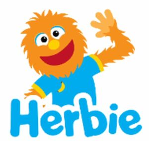

Trade Mark Journal No.2025/046 14 November 2025
WO0000001883458 (16,18)
Office of origin: United States of America

The mark consists of the mark consists of the upper body and head of a furry orange monster wearing a blue shirt with yellow trim and a yellow and brown banana design. The monster's left hand is raised, and the face features a red smiling mouth, a yellow nose, and blue, black, and white eyes. The literal element "HERBIE" appears in blue below the monster. All other instances of the color white in the mark represent background, outlining, shading and/or transparent areas and is not claimed as a feature of the mark.
The mark contains the colours blue, orange, red, yellow, brown, black, and white.
A furry orange monster wearing a blue shirt with yellow trim and a yellow and brown banana design. The monster's face features a red smiling mouth, a yellow nose, and blue, black, and white eyes. The literal element "HERBIE" appears in blue. All other instances of the color white in the mark represent background, outlining, shading and/or transparent areas and is not claimed as a feature of the mark.
- Class 16
- Sticker albums, trading card albums and photo albums; printed children's coloring books; printed children's activity books; paper and cardboard party decorations; paper, cardboard and goods made from these materials, namely, wrapping paper, printed decorative paper, gift bags, paper boxes, paper tags, note paper, paper stationery, paper party goodie bags, cardboard boxes, craft paper; printed matter, namely, calendars; printed photographs; printed diaries; printed blank writing journals; printed blank notebooks; printed blank notepads; printed blank notelets; envelopes; printed blank writing books; scrapbooks; notebook dividers; bookmarks; stationery, namely, crayons, erasers, pens, pencils, chalks, felt pens, ballpoint pens, felt tip markers, highlighting markers, glue for stationery purposes, glitter for stationery purposes; pencil cases; paint brushes; ring binders; printed birthday cards; printed greeting cards; printed invitations; printed paper stationery labels; adhesive tapes for stationery or household use; desk stands for pens and pencils; printed magazines and comics featuring children's animation and fictional characters; printed picture books for children; stickers and sticker books; sketch books; printed painting books; printed children's activity books; printed children's activity books containing puzzles and games; arts and crafts kits comprised of crayons, pens, paint boxes, printed coloring books, craft paper and stickers; arts and craft paint kits; paper place mats.
- Class 18
- Backpacks; all-purpose carrying bags; diaper bags; diaper bags incorporating diaper changing pads; handbags; fanny packs; slings for carrying babies; luggage; all-purpose reusable carrying bags; tote bags; sling bags; duffle bags; baby carrying bags; all-purpose carrying bags for use by children and parents of children; baby carriers worn on the body.
Songs for Littles, LLC
Representative: Jeffrey Larson Holland & Hart LLP, PO Box 8749, TM Docketing, Denver CO 80201, UNITED STATES OF AMERICA